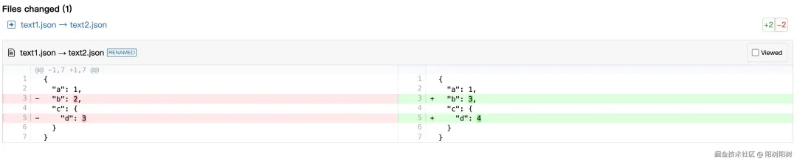

背景
背景是我想要做一个类似于 github 的代码比对的效果，方便我后续做表单更新的时候，通过 Json View 可以很清晰的看到变更，所以需要做这么一个东西，看了一下市面上有不少比较完整的插件，所以就选择了其中的一种来实现，整体做下来还是很快的。
技术方案
技术选型：jsDiff + diff2html
<!DOCTYPE html>
<html lang="en">
<head>
<meta charset="UTF-8" />
<title>diff2html Example</title>
<!-- 引入diff2html的CSS样式 -->
<link
rel="stylesheet"
href="https://cdn.jsdelivr.net/npm/diff2html/bundles/css/diff2html.min.css"
/>
<!-- 引入diff2html的JavaScript库 -->
<script src="https://cdn.jsdelivr.net/npm/diff2html/bundles/js/diff2html-ui.min.js"></script>
<!-- 引入 jsdiff 的JavaScript库 -->
<script src="https://cdn.jsdelivr.net/npm/diff/dist/diff.min.js"></script>
</head>
<body>
<!-- 用于显示差异的容器 -->
<div id="diff-output"></div>
<script>
// 差异字符串（通常通过diff算法生成）
// 定义两个JSON对象（作为示例）
const obj1 = { a: 1, b: 2, c: { d: 3 } };
const obj2 = { a: 1, b: 3, c: { d: 4 } };
// 将JSON对象转换为字符串进行比较
const text1 = JSON.stringify(obj1, null, 2);
const text2 = JSON.stringify(obj2, null, 2);
// 页面加载完成后执行
document.addEventListener("DOMContentLoaded", function () {
// 获取显示差异的DOM元素
var targetElement = document.getElementById("diff-output");
const diffOutput = Diff.createTwoFilesPatch(
"text1.json", // 左侧文件名（仅用于标识）
"text2.json", // 右侧文件名（仅用于标识）
text1,
text2,
"", // 补丁标题（可选）
"" // 补丁标题前缀（可选）
);
// 初始化diff2htmlUI并配置
var configuration = {
drawFileList: true, // 是否在差异之前显示文件列表
fileListToggle: false, // 是否允许切换文件列表的显示
fileListStartVisible: false, // 文件列表是否初始时可见
matching: "lines", // 匹配级别：行
outputFormat: "side-by-side", // 输出格式：并排显示
synchronizedScroll: true, // 同步滚动（并排模式）
highlight: true, // 是否高亮显示代码
renderNothingWhenEmpty: false, // 如果没有差异，是否渲染空内容
};
// 创建并绘制diff
var diff2htmlUi = new Diff2HtmlUI(
targetElement,
diffOutput,
configuration
);
diff2htmlUi.draw();
diff2htmlUi.highlightCode();
});
</script>
</body>
</html>
实现效果：
React 中使用
只实现一个 HTML DEMO 肯定远远不够，我们需要实际落地的话，就得使用 React 来实现。
- 下载相关依赖
yarn diff
yarn diff2html
- 需要关注一下引入路径：不仅仅是处理 diff 文件的引入路径，diff 的样式的引入路径也同样需要关注，可以简单看看，列举如下：
import { createTwoFilesPatch } from "diff";
import { Diff2HtmlUI } from "diff2html/lib/ui/js/diff2html-ui";
import "highlight.js/styles/googlecode.css";
import "diff2html/bundles/css/diff2html.min.css";
- 使用设计好的组件
<DiffComponent
prevData="{code1}"
curData="{code2}"
prevFileName="{code1Name}"
curFileName="{code2Name }"
/>
这里的话其实还值得一提：可以在这里结合Modal/Drawer把DiffComponent封装一下，当然封装的过程少不了改组件本身的样式，因为常见的使用位置是在一个页面上，但我们有些常见是需要封装在 Modal 和 Drawer 里面的。